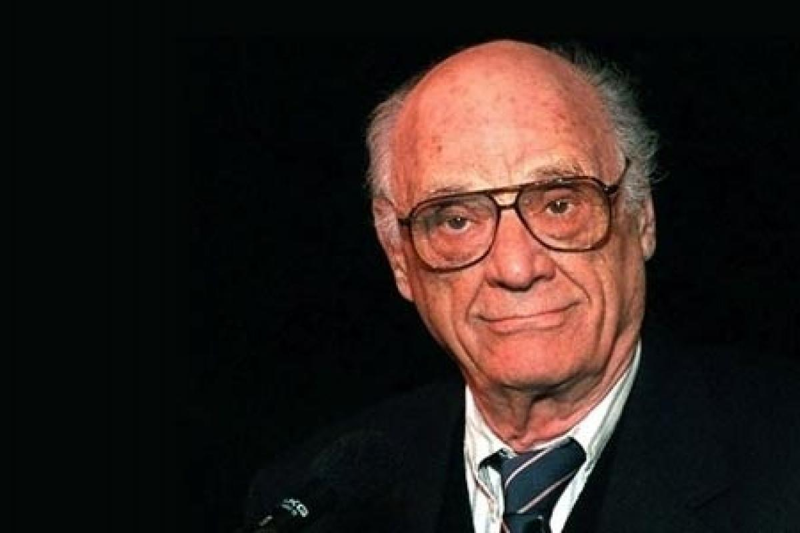

In the Puritan town of Salem, Massachusetts in 1692, the town minister, Reverend Parris, discovers his daughter Betty, niece Abigail, and other girls dancing in the forest with his slave Tituba. Betty faints in fright at being discovered, and will not wake. Rumors of witchcraft spread through the town and a crowd gathers at Parris's house while Parris, nervous about his reputation, questions Abigail about what the girls were doing in the forest. Abigail says they were just dancing, though it soon comes out that Tituba was trying to conjure dead spirits. Parris runs off to calm the crowd, and a local farmer named John Proctor winds up alone with Abigail. While Abigail was a servant in the Proctor household, she and Proctor had an affair. Abigail tells Proctor there was no witchcraft, and insists Proctor still loves her. Proctor, guilt-ridden over the affair, tells her it's over. As the crowd downstairs begins to sing a hymn, Betty starts screaming and Parris, Thomas Putnam, Ann Putnam, Rebecca Nurse, and Giles Corey come running into the room. An argument about whether witchcraft led to Betty's condition soon transforms into an argument about other local political issues. Just then, Reverend Hale, a noted investigator of witchcraft, arrives, and Proctor, Rebecca Nurse, and Giles Corey leave.
Under threat of punishment if she refuses to confess, Tituba breaks down and admits she communed with the devil. She begins to name other witches in the town. Abigail, seeing that she'll be punished unless she joins Tituba in naming names, leaps up and begins to name more witches. Betty wakes and joins in. Eight days later, Proctor and his wife Elizabeth discuss the many people who have been charged with witchcraft by a court presided over by the deputy governor of the province. They learn from their servant Mary Warren, one of the girls accusing people in the town of witchcraft, that Elizabeth is herself accused. Elizabeth wants Proctor to expose Abigail as a fraud, but she suspects Proctor may still have feelings for the girl. As Proctor angrily denies it, Hale arrives to investigate the Proctors. He's soon followed by Giles Corey and Francis Nurse, whose wives have been accused of witchcraft and imprisoned. Moments later the authorities come and take away Elizabeth. Once they're alone, Proctor demands that Mary expose the other girls as frauds and promises to confront Abigail if he must.

Proctor brings Mary to court to expose the accusations as lies. The girls, led by Abigail, deny the charge. Proctor reveals his affair with Abigail to show that she's dishonest. To test Proctor's claim, Deputy Governor Danforth calls out Elizabeth, who Proctor says will never lie. But when asked if Proctor had an affair with Abigail, Elizabeth denies it to protect her husband's honor. Abigail and the other girls seize the moment to pretend Mary is attacking them with her spirit. Mary breaks under the strain and joins them, denouncing Proctor as an ally of the devil. Danforth orders Proctor's arrest. Hale, who now believes Proctor, denounces the actions of the court.
The witch trials cause anger and riots in nearby towns. A few days before Proctor and many others are scheduled to hang, Abigail steals money from Parris and vanishes. Parris and Hale try to get the people convicted of witchcraft to confess in order to save their lives, because Danforth refuses to stop or postpone the executions, saying it would not be fair to those already hanged. But Danforth does allow Elizabeth, who's pregnant and therefore safe from hanging, to talk to Proctor. After speaking with his wife, Proctor agrees to confess, but refuses to incriminate anyone other than himself. Once he signs his confession, he refuses to hand it over. His name is all he has left, he says, and he won't ruin it by signing lies. Danforth says that if Proctor is not honestly confessing, then he won't accept the confession. Proctor tears up the statement. Parris and Hale are horror-struck as Proctor goes to the gallows, but Elizabeth says he has gotten his "goodness" back.
Arthur Asher Miller (October 17, 1915 – February 10, 2005) was an American playwright, essayist, and a major figure in the twentieth-century American theater. Among his most popular plays are All My Sons (1947), Death of a Salesman (1949), The Crucible (1953) and A View from the Bridge (1955, revised 1956). He also wrote several screenplays and was most noted for his work on The Misfits (1961). The drama Death of a Salesman has been numbered on the short list of finest American plays in the 20th century alongside Eugene O'Neill's Long Day's Journey into Night and Tennessee Williams's A Streetcar Named Desire.
